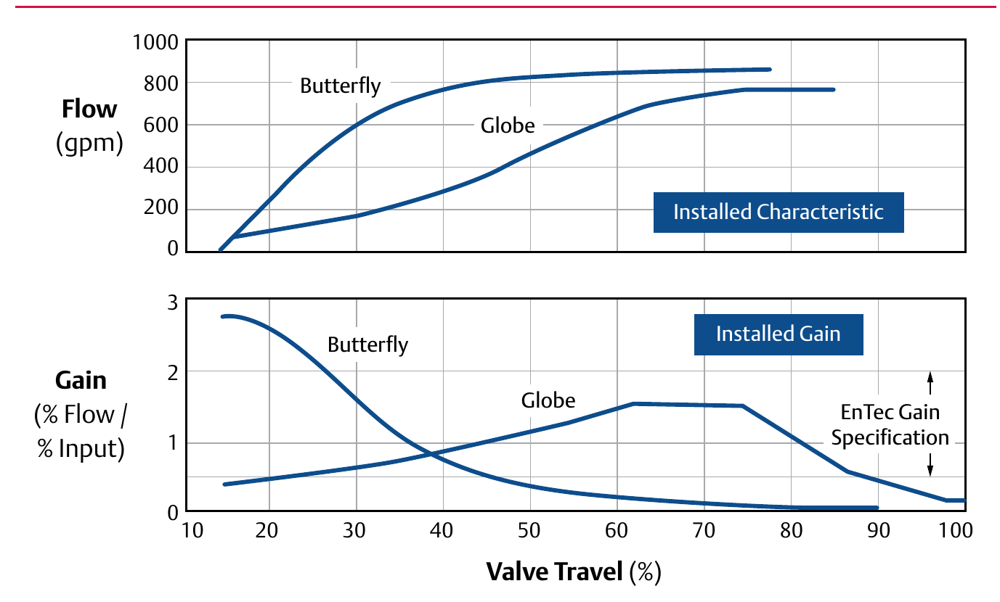

Control Range: Butterfly vs. Globe
Butterfly

Installed gain drops out of the EnTec spec band low in the travel range — a narrow window of controllable travel, the exposure high-capacity rotary designs carry when picked at line size
Globe
Installed gain stays inside the spec band across roughly the middle-to-upper half of travel — a controllable range wide enough to absorb the same oversizing that would badly hurt a butterfly
After Control Valve Handbook, 6th ed., Fig. 2.6 — used directly, same crop serving both panels. Component Index: cvh-cmp-valve-style-control-range-comparison.